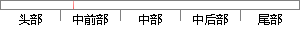

双击要添加公差的尺寸弹出窗口，在弹出的窗口中，选择需要的公差，在公差值里输入公差值，单击关闭，过程如图1-27所示。
片段位置图

相似结果|
相似片段 1：修改其上、下偏差值．具体操作为：选取所需要修改的尺寸后右击．在弹出的快捷菜单中，单击特性选项．在打开的特性窗口中修改其上、下偏差值+但要注意下偏差欺认为负值。例如州4：82M43，在特性窗121的公差
|
※ 片段修改建议 ※
近似词参考：- 公差：公役
- 需要：必要
- 公差：公役
- 公差：公役
- 公差：公役
- 关闭：封闭
- 过程：进程 历程
系统自动生成语句：双击要添加公役的尺寸弹出窗口，在弹出的窗口中，选择必要的公役，在公役值里输入公役值，单击封闭，进程如图1-27所示。
注：本片段修改建议为系统自动生成，仅供参考。